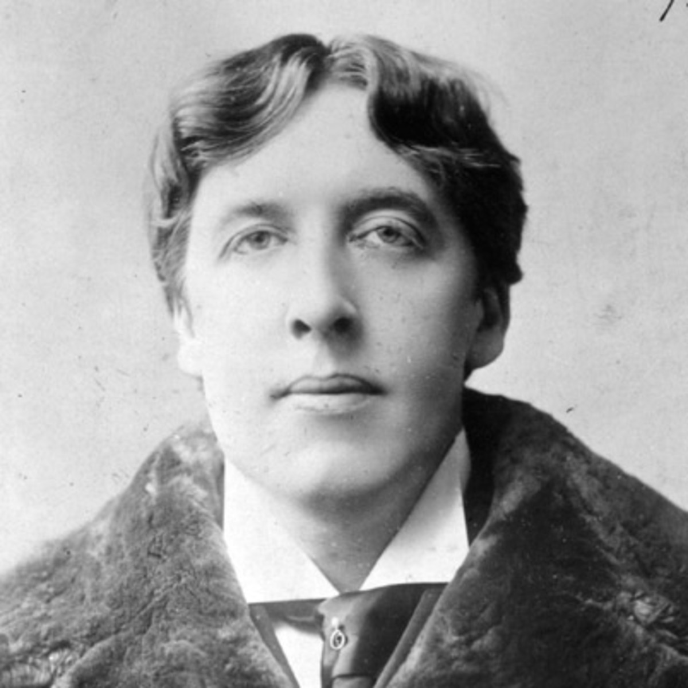

Книги
Портрет Доріана Грея
історія про нев'янучу красу юнака, який заради збереження молодості пішов на угоду з совістю.
Кентервільський привид
Американський посол містер Отіс купує в Англії замок, про який ходять легенди. Купує разом з меблями та фамільним привидом. Злий дух має намір досхочу покуражитися над новими господарями, але не тут-то було: Отіси та ще сімейка! Зрештою, нещасне привид визнає свою поразку. Юна дочка посла Вірджинія пошкодувала бідної примари, і історія набула щасливого кінця. Знаменита казка Оскара Уайльда показує цінність доброти, терпіння та співчуття навіть у сучасному прагматичному світі.
Щасливий Принц. Казки
Як важливо бути серйозним?
П'єса класика світової літератури Оскара Уайльда широко відома, неодноразово перекладалася російською мовою, постійно тримається в репертуарі театрів світу. Однак, на думку перекладача, знавця англійської драматургії, деякі найважливіші нюанси, на яких базується комедія, так і не дійшли російської публіки. Він пропонує свій погляд на яскраві характери та іскрометні діалоги, що становлять головну красу цієї дотепної п'єси, яку актори завжди цінували так само високо, як і публіка.
Соловей и Роза
Молодий Студент мріяв про червону троянду, яка дасть йому можливість потанцювати з коханою дівчиною. І Соловей, який співає пісні для справжніх закоханих, вирішив допомогти йому...
Віяло леді Віндермір
Подружжя лорд і леді Віндермір насолоджуються сімейною ідилією. Несподівано їхній спокій порушує таємнича гостя місіс Ерлін, яку господиня вдома відразу приймає за суперницю. Піддавшись ревнощів, леді Віндермір мало не наважується на зраду, шлюб на межі розпаду. Але тут знову втручається місіс Ерлін.
Соломія
Трактування драми "Саломея" англійського письменника Оскара Уайльда разюче відрізнялася від загальноприйнятої, що бачить у Саломеї язичницьку царицю, слухняну волі своєї жорстокої матері. "Саломея" Уайльда - відродження поетичної драми великих пристрастей, у якій кохання невідривне від смерті. "Якщо можна про якусь драму сказати, що вона - суцільний дорогоцінний камінь, це потрібно сказати саме про драму Оскара Уайльда "Саломея"... - писав Костянтин Бальмонт. - У розкішній панорамі, сповненій яскравого божевілля, Оскар Уайльд показав нам лик Диявола у коханні".